江南自古就是一个人杰地灵、风光秀美的地方。而江南的秋色，更是一部色彩斑斓的大片，片中的重点，是到无锡惠山古镇赏银杏。
无锡惠山古镇，坐落于无锡的西面，旧时因为古镇处在无锡城墙的外面， 这一区域统称为无锡的“西门”地区。建国后，拆除了封闭的城墙，惠山古镇便成为一处市中心的花园。
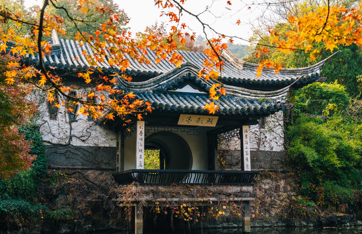
整个惠山古镇，在江南地区来说，规模还是相当的大。 它涵盖了古建筑区，就是无锡人俗称的“横街”和“直街”，以及古祠堂群， 另外还有惠山寺等文物古迹区，锡惠名胜区等，内部还有不少名闻遐迩的园中园，像寄畅园、中国杜鹃园、惠山园等。
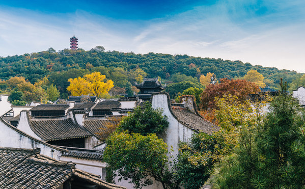
惠山古镇的前身，是一处被无锡人称之为“锡惠公园”的园林景区，随着惠山“横街”和“直街”的开发与恢复， 已经形成了一处含中国最大的露天古祠堂建筑群、江南第一山、天下第二泉等著名景点的名胜区。 目前，惠山古镇的古祠堂建筑，已被列入世界文化遗产预备目录。
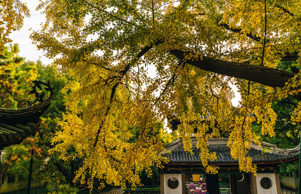
从每年的九月份开始，惠山古镇便会进入最靓丽的金秋季节。
从一年一度的大型菊花展，到红枫、银杏树、乌桕树等彩叶树木的染色，当然最吸引人的，要数惠山古镇上的银杏树。
银杏，江南人喜欢叫它“公孙树”，因其生长缓慢，爷爷辈栽下的树，要等孙子辈长大后才能成材。 银杏的树干是古时建房做栋梁的绝好材料，银杏果又是好食材，故而江南一带，都习惯在自己的屋前房后栽种银杏树，能成材的，每棵树的年龄都在百岁以上。
而惠山古镇里，恰好保存下来了这些年代悠久的银杏树。因而每年的秋季，去惠山古镇赏银杏黄叶，成为江南一带的秋游传统。
银杏叶子年年黄，只是其意境各不相同。 去惠山古镇赏银杏，这四个地点最具代表性。它们分别为张中丞祠、顾可久祠、惠山寺、和“天下第二泉”边上的云起楼。
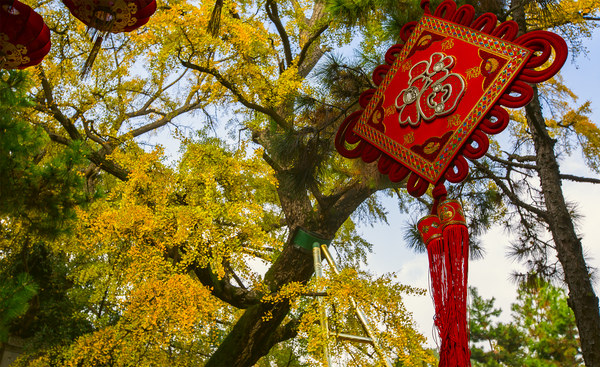
进入惠山古镇的大门，从古镇的直街行进二百多米，就有一处“ 张中丞祠”， 这是江南百姓为纪念唐朝“安史之乱”时率部御敌的张巡而建立的，民间也俗称“张老爷庙”。
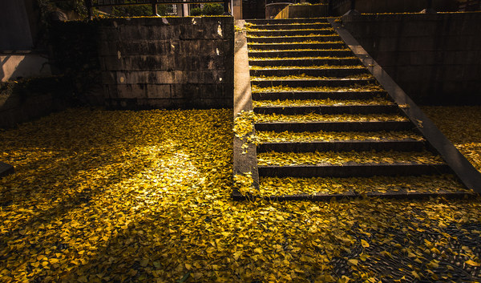
历史上这座古祠曾屡建屡毁，现在人们见到的祠堂，也是近代才修复的，但祠堂院子内两棵四百多年的古银杏，却是货真价值的宝贝。 这两棵银杏树，树的直径一个人几乎无法环抱，高度在二十来米，枝繁叶茂，为树冠下面的古戏台遮风挡雨。
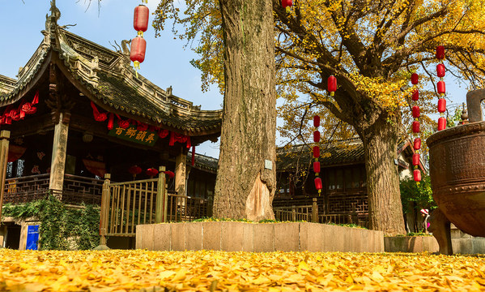
深秋的时候，大片金黄色的银杏叶从树枝上坠落下来，祠堂的地面上会铺上一层厚厚的银杏叶。 西北风吹过时，银杏叶便在院子的地上打个滚，极不情愿地挪动一下位置， 又到另一个角落静静地躺下，仿佛告诉游人，它们才是这座百年祠堂的主人。
顾可久祠堂，是惠山古镇中一处较大的古建筑。顾可久，明代无锡人，他的名气不算大，外界知道的也不多。 但要说到明代的清官海瑞，相信熟悉的人会很多。当年顾可久在广东主持乡试时，发现了海瑞的才能，并向朝廷力荐了海瑞。 海瑞最后能闻名天下，顾可久的功不可没。 现在人们在惠山古镇看到的顾可久祠堂，还是当年海瑞为答谢恩师，启奏皇上的恩准才兴建的。
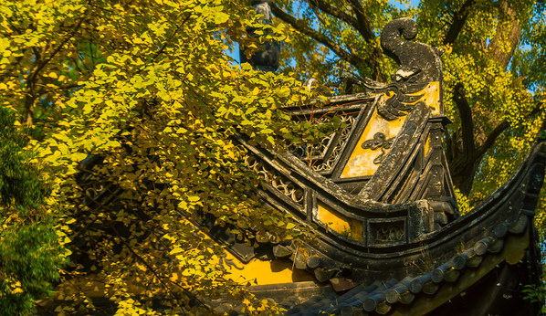
从惠山古镇一条僻静的小巷，来到顾可久祠堂的侧门，侧门内的庭院里， 有一颗树龄在470多年的银杏树，树的大半在院落内，树的枝丫探出院子的围墙。 每到银杏落叶时，一半的黄叶铺满院子的地面，而另一半黄叶则落在僻静的巷子里，每每引来游客驻足。
画意中的古镇小巷，有黛瓦白墙，有蜿蜒的石板路，有落叶银杏，如果真有丁香花一样的女子走过，那样的意境，很江南。
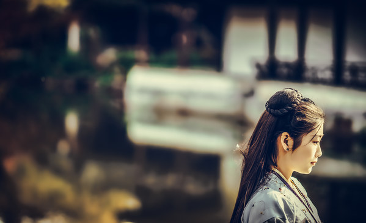
银杏树为雌雄异株植物，雄树只开花不结果，雌树能开花和结白果。 但雌雄同株的银杏树极为罕见，惠山古镇的惠山寺大雄宝殿门前， 就有一颗雌雄同株的银杏树，这也是古镇里银杏树中最为珍贵的一棵，它已有六百多年的树龄了。
相传，明代洪武初年，惠山寺的性海大师在大雄宝殿门前亲手种植了十八棵银杏树，象征着佛门的十八罗汉。 历史巨变，今天十八棵银杏树仅存一株，而且是雌雄同株的一棵银杏树。 这棵银杏树高达二十多米，也许因年代久远，也许是树枝太高大茂密了，银杏树的躯干已不能承受之重，树干变得向一侧倾斜。 古镇方面为了不让这棵银杏倒下，便在树下用两根巨大的钢柱撑起树的躯干。
这棵六百多年的银杏树，就生长在惠山寺的山门前，迎来送往一代又一代前来烧香许愿的信众。 山门的围墙也是佛宗里的黄色，秋时，太阳懒散地照在树丛上，斑驳的光线映在围墙，树叶就一片片缓慢地从树枝坠落到地面。 游人至此，眼前能见到的全部是醉人的金黄色。抹不上，也化不开。
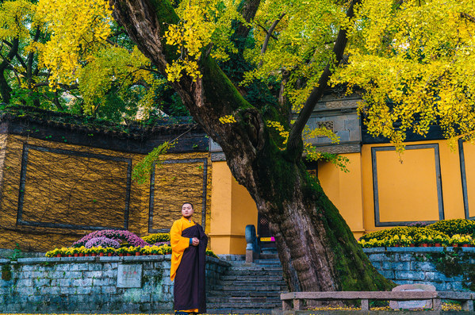
古镇上的“天下第二泉”，也许无人不知，但其旁边的云起楼，却是一个不起眼的景点。 云起楼下面的空地上，孤零零地生长着一颗银杏树，其树龄也许是整个古镇里最短的，才260多年。 而且其树干的一半，已经被雷电劈坏，但银杏树依旧顽强地生长着。
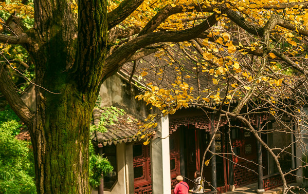
云起楼，因曲折的廊桥逐步向山上盘升，好像是通向云中一样而得名。 云起楼的前身是惠山禅寺的僧房，因为清朝的康熙皇帝要来惠山寺，当地的地方官僚便将这处僧房改建成如今的盘山上升的回廊。 据说当年康熙、乾隆两帝来惠山寺时，就在云起楼前接驾的。
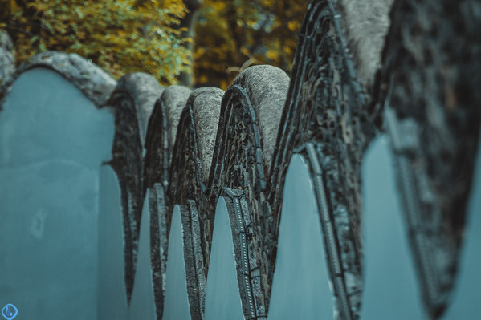
云起楼的这棵古银杏，很突兀地耸立于铺满青砖的院子里。 当黄色的树叶凋落在暗青色地面上时，围成一圈一圈的黄叶，衬托着高大的树干，犹如金鸡独立寒秋一般。 这个时候，登上云起楼，从高处拍摄古银杏，画面便充满了禅意。
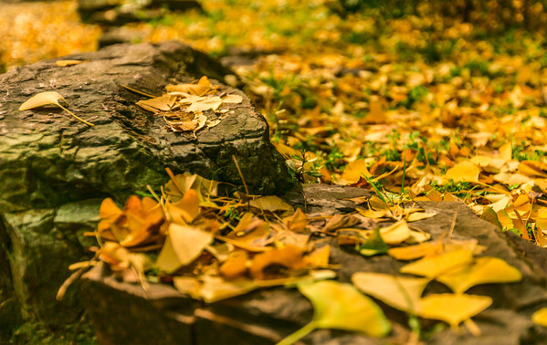
江南的古镇，江南的银杏，有着不一样的秋色。如果你也喜欢这份秋，便去无锡惠山古镇看看吧。
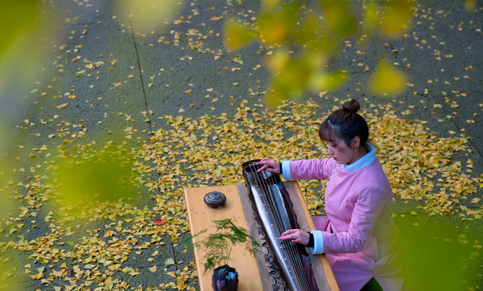
或许你会喜欢上这里！